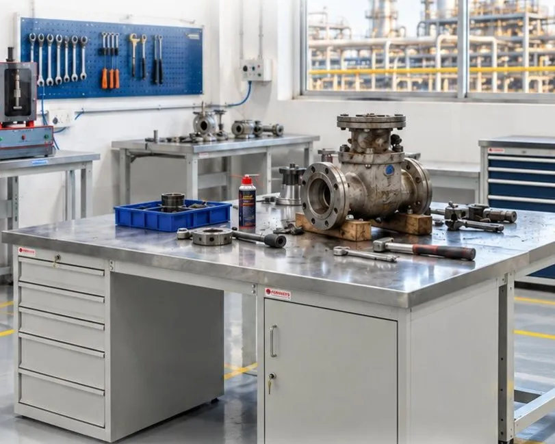
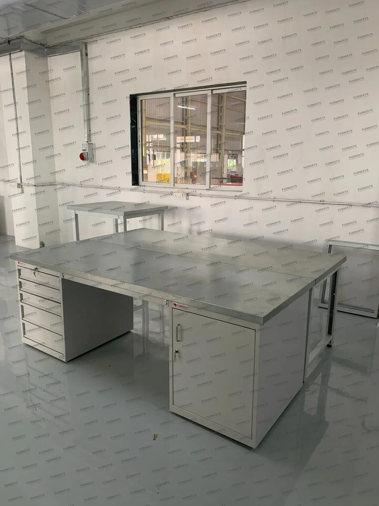
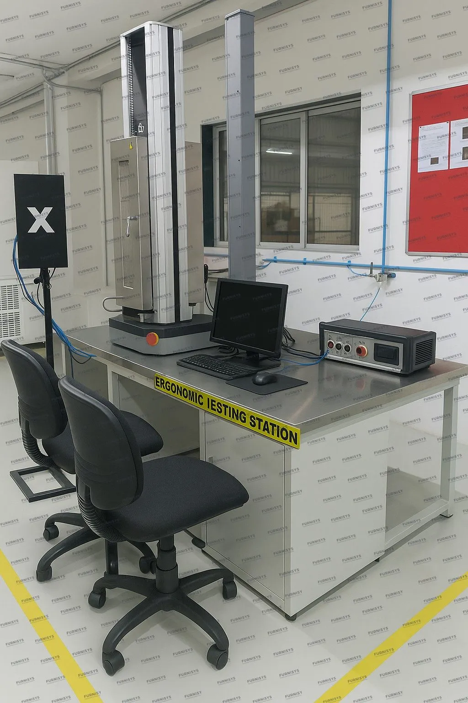
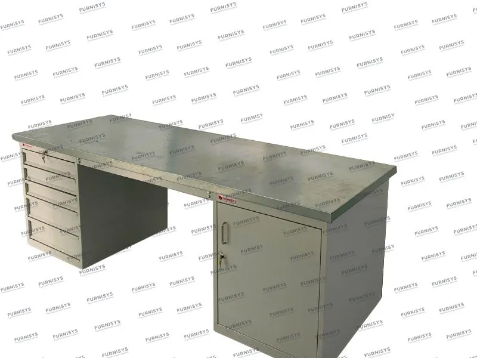
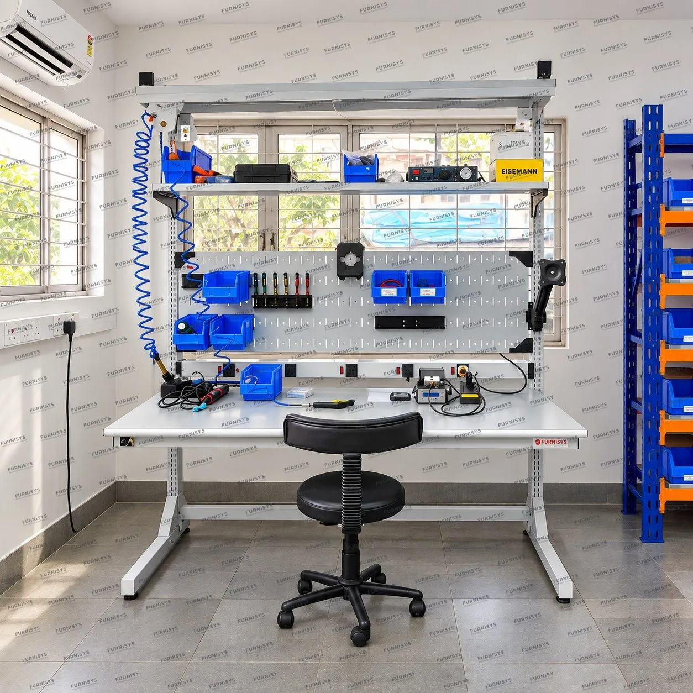
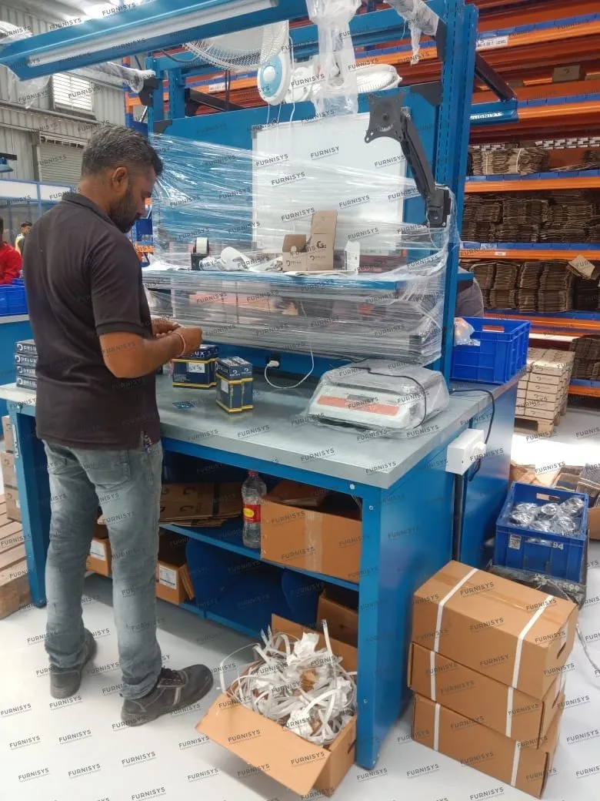

Pro Series Heavy Duty Workbench
An industrial grade workbench series designed to withstand rough work environments.

Key features and benefits.
Casters
Optional heavy-duty casters can be added to provide mobility, making it easy to clean, rearrange, or repurpose your…
Above-Worksurface Accessories
Integrate the Link Uprighter system with your Pro Series workbench to mount shelves, lighting, tool rails, and more…
Ergonomic Drawer & Cabinet Handles
Integrated flush-fit handles improve safety, reduce hazards, and maintain a clean, professional aesthetic across your…
Variety of Resilient Worksurfaces
Rugged top options available in multiple sizes
Heavy Duty Welded Leg Structure
Reinforced frame for super heavy-duty applications
Configurable Accessories & Storage
Better organization with quick tool access
How it fits your work.
At Furnisys, we bring you the Pro Series Heavy Duty Workbench — a modular solution designed for industries that demand performance, durability, and smart ergonomics. Built with robust construction and high weight capacity (up to 1000kg), these heavy-duty workbenches are ideal for supporting bulky machinery, tools, and repetitive operations in challenging environments.Whether you're running a manufacturing plant, an…
Configuration | Description |
2 Pro Legs | Basic high-strength support setup |
2 Pro Legs + 1 Drawer | Includes under-worktop drawer for essentials |
1 Pro Leg + 1 Cabinet | Balanced design with side cabinet storage |
1 Pro Leg + Configured Cabinet | Integrates a configured cabinet on one side |
2 Cabinets | Maximum storage and support |
2 Configured-Specified Cabinets | Fully configurable cabinet setup |




Used in these solutions.
See how Pro Series Heavy Duty Workbench is configured inside complete workspaces.

Aerospace Workspace Solutions
Aerospace facilities operate across highly specialised environments. Furnisys approaches each space as a…
Explore
Automotive Workspace Solutions
Automotive service centres operate across a wide range of specialised bays — from fast-turnaround express…
Explore
Gems and Jewellery
Gems and jewellery manufacturing facilities bring together fine craftsmanship and industrial process control…
ExploreRelated products.

Flexi Modular Workstation System
Our most flexible workstation — designed to adapt, expand, and reconfigure effortlessly as your workspace needs evolve.

ESD Workstations
Comprehensive ESD-safe solutions designed to protect sensitive components and ensure a static-controlled environment.

Link Flow Racks
Experience efficient material handling with LINK Flow Racks—designed to streamline picking, sorting, and assembly processes.

Link Packing Accessories
"Designed to support efficient packing and shipping operations" — can be integrated with Furnisys work systems to streamline workflow, improve accessibility and enhance…
Specifications and drawings.
Sizes, load ratings, worktops and accessories for Pro Series Heavy Duty Workbench. Download the one-page sheet, or ask our team for drawings of your configuration.
Need drawings for approval?
Share your layout and quantities. We send general-arrangement drawings and part numbers for your configuration.
The full product catalogue is shared on request.
Frequently asked questions.
What is the Pro Series workbench used for?
Rough, heavy-duty work: maintenance, tool rooms, fabrication and heavy parts. It is built for loads of up to 1,000 kg.
Can a Pro workbench be made mobile?
Yes. Optional heavy-duty casters make it easy to clean around, rearrange or repurpose the bench.
What storage can be built into it?
Pro benches can be configured with legs only, an under-worktop drawer, or a side cabinet, and accept the Link Uprighter above the worktop for shelves and tools.
Which worktop should I choose for oil or impact?
Galvanised iron cladding suits impact and die work; stainless steel suits oils, chemicals and washdown.
Where are Furnisys products made?
Furnisys products are designed and made by Fabtech India in its 22,000 sq. ft. facility in Navi Mumbai, Maharashtra, and supplied across India.
How do I get a price or drawings?
Use Get a quote on this page, request the catalogue, or call +91 70457 63012. Our team shares drawings of your configuration on request, and can plan the layout in 2D and 3D.
Where it fits.
Not sure the Pro Series workbench is right for you? Start from the problem you need to solve, see where it has been installed, and read up before you choose.
Problems it helps solve
Standard setups that include the Pro Series workbench, and the job it does in each.
Projects that use it
Real installations, with the layout, the brief and what changed.
Read before you choose
Use cases and guides where this product comes up.
Let's plan the right setup for your team.
Share your space, the work done in it and any drawings you have. We'll suggest a configuration and a layout.